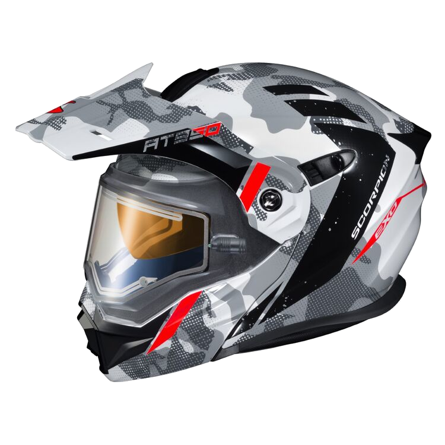

Scorpion EXO-AT950 Outrigger Helmet - Electric Shield
A Scorpion ismét újradefiniált egy szegmenst, ötvözve a kettős sportsisak legjobb tulajdonságait elektromos lencsével a tiszta téli motorozás érdekében. A Scorpion EXO-AT950 hósisak a sisakvilág minden-az-egyben svájci bicskája. A moduláris állrúd segítségével enyhítheti klausztrofóbiáját, vagy útbaigazítást kérhet, miközben az off-road stílusú csúcs és a nagy szemnyílás eltéríti a pihenést, eltakarja a napot, és lehetővé teszi, hogy védőszemüveget viseljen az ösvények felszakításakor. További funkciók, mint például az elektromos arcvédő és a Speedview legördülő belső napellenző, tisztán látja, és készen áll mindenre, ami a következő sarkon van. Ha elüti a havat, a csúcsellenző könnyen eltávolítható, hogy aerodinamikai profilt kapjon, így gyorsulhat ki. A szemüveggel kompatibilis arcpárnák és a KwikWick II bélés teljes kényelmet biztosít.